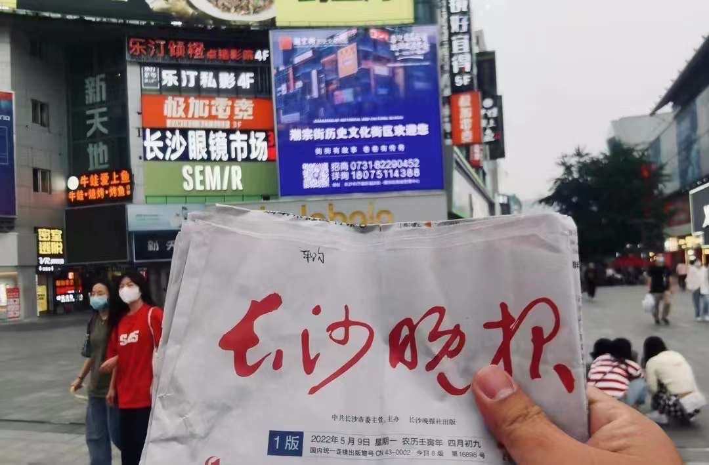
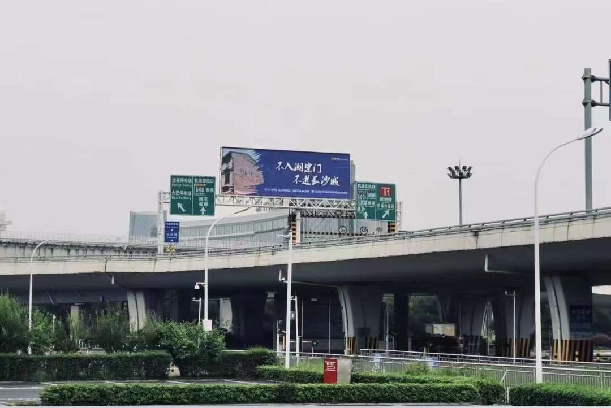
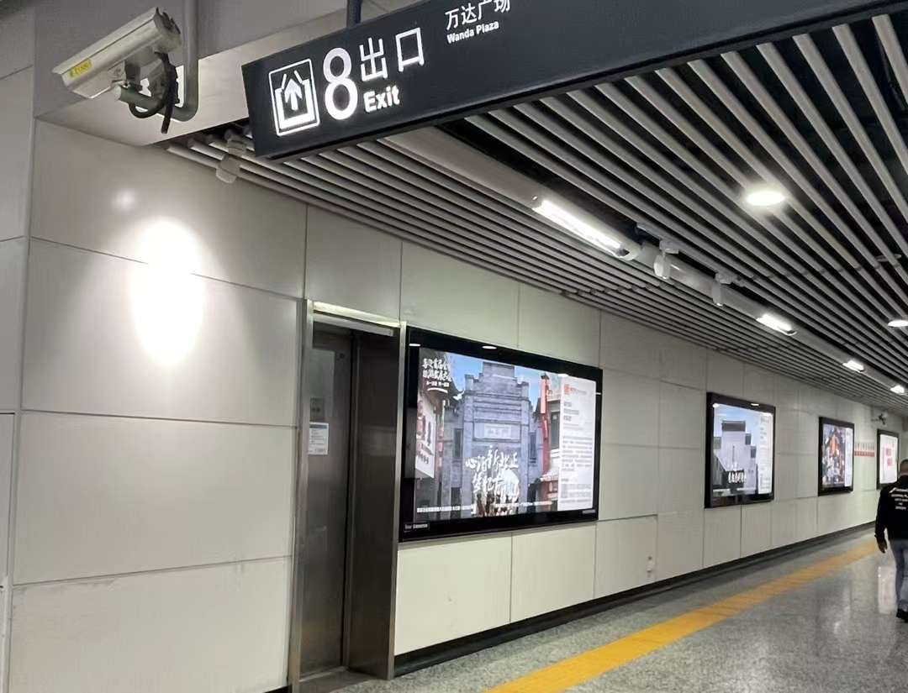

Introduction
Chaozong Street historical and cultural district is the cultural heritage of Changsha, retaining the street pattern formed since the Ming and Qing dynasties, there are 2 provincial cultural preservation units, municipal level There are two provincial-level cultural preservation units, 10 municipal-level cultural preservation units, two general immovable cultural heritage sites and two traditional style buildings. Chaozong Street has been reinvented through organic regeneration and is now a comprehensive historical and cultural district that integrates culture, tourism, commerce and residence.
潮宗街历史文化街区是长沙的文麻和传承所在，保留了自明清以来形成的街巷格局，街区内有省级文保单位2处、市级文保单位10处、一般不可移动文物点2处和冬处传统风貌建筑。潮宗街在有机更新中得以重塑，如今该街区已成为集文化、旅游、商业、居佳等于一体的综合性历史文化街区。
Final Exhibition


